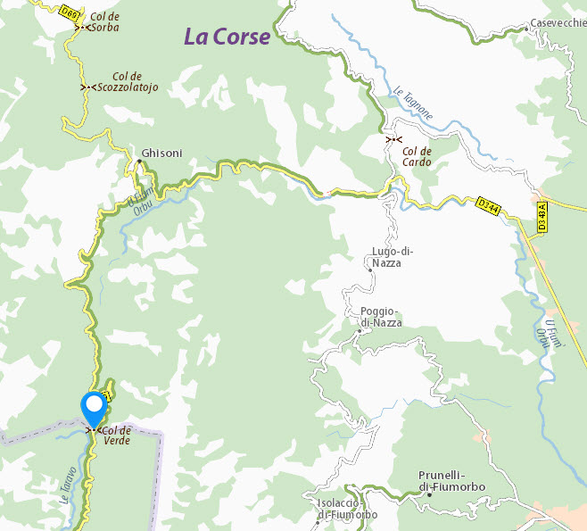

Localisation :
Le gîte est situé à proximité du Col de Verde, sur le célèbre sentier de randonnée GR20 en Corse.
Par la route :
- Départementale D69 depuis Ajaccio.
- Départementale D344 puis D69 depuis Ghisonaccia.
Par le GR 20 :
Entre le refuge de Capanelle et le refuge de Prati
Coordonnées GPS :
Latitude : 42.028474
Longitude : 9.195086